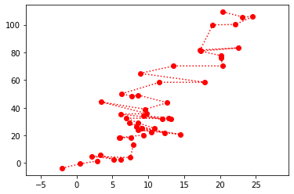
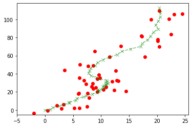
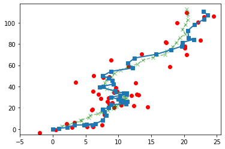
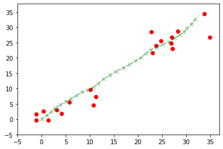
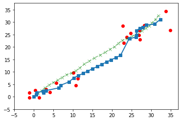

\(\newcommand{\P}{\mathbb{P}}\) \(\newcommand{\E}{\mathbb{E}}\) \(\newcommand{\S}{\mathcal{S}}\) \(\newcommand{\var}{\mathrm{Var}}\) \(\newcommand{\bmu}{\boldsymbol{\mu}}\) \(\newcommand{\bSigma}{\boldsymbol{\Sigma}}\) \(\newcommand{\btheta}{\boldsymbol{\theta}}\) \(\newcommand{\bpi}{\boldsymbol{\pi}}\) \(\newcommand{\indep}{\perp\!\!\!\perp}\) \(\newcommand{\bp}{\mathbf{p}}\) \(\newcommand{\bx}{\mathbf{x}}\) \(\newcommand{\bX}{\mathbf{X}}\) \(\newcommand{\by}{\mathbf{y}}\) \(\newcommand{\bY}{\mathbf{Y}}\) \(\newcommand{\bz}{\mathbf{z}}\) \(\newcommand{\bZ}{\mathbf{Z}}\) \(\newcommand{\bw}{\mathbf{w}}\) \(\newcommand{\bW}{\mathbf{W}}\) \(\newcommand{\bv}{\mathbf{v}}\) \(\newcommand{\bV}{\mathbf{V}}\)
7.4. Linear-Gaussian models and Kalman filtering (under construction)#
In this notebook, we illustrate the use of linear-Gaussian models for object tracking. We first give some background.
7.4.1. Kalman filter#
The model: We consider a Markov process \(\{\bX_t\}_{t=0}^T\) with state space \(\S = \mathbb{R}^{d_0}\) of the following form
where the \(\bW_t\)’s are i.i.d. \(\mathcal{N}(\mathbf{0}, Q)\) and \(F\) and \(Q\) are known \(d \times d\) matrices. We denote the initial state by \(\bX_0 = \bx_0\). We assume that the process \(\{\bX_t\}_{t=1}^T\) is not observed, but rather that an auxiliary observed process \(\{\bY_t\}_{t=1}^T\) with state space \(\S = \mathbb{R}^{d}\) satisfies
where the \(\bV_t\)’s are i.i.d. \(\mathcal{N}(\mathbf{0}, R)\) and \(H \in \mathbb{R}^{d \times d_0}\) and \(R \in \mathbb{R}^{d}\) are known matrices. Graphically, it can be represented as follows, where as before each variable is node and its conditional distribution depends only on its parent nodes.
Figure: HMM (Source)
{kind=link}

\(\bowtie\)
Our goal is to infer the unobserved states given the observed process. Specifically, we look at the filtering problem. Quoting Wikipedia:
The task is to compute, given the model’s parameters and a sequence of observations, the distribution over hidden states of the last latent variable at the end of the sequence, i.e. to compute P(x(t)|y(1),…,y(t)). This task is normally used when the sequence of latent variables is thought of as the underlying states that a process moves through at a sequence of points of time, with corresponding observations at each point in time. Then, it is natural to ask about the state of the process at the end. This problem can be handled efficiently using the forward algorithm.
The forward algorithm: We derive the forward algorithm in the discrete case. As usual it can be adapted to continuous case such as the linear-Gaussian model. We use the notation \(\bx_{1:s} = (\bx_1, \ldots,\bx_s)\). The joint distribution (of what is referred to as a hidden Markov model) takes the form
Our goal is to maximize over \(\bx_t\)
Because the denominator does not depend on \(\bx_t\), it suffices to compute the numerator.
We give a recursion for the numerator \(\alpha_t(\bx_t)\) as a function of \(\bx_t\) that takes advantage of the conditional independence relations in the model. Observe that
The two conditional probabilities on the last line are known.
Returning to the linear-Gaussian case: In the linear-Gaussian case, the joint distribution is multivariate Gaussian and the conditional densities are specified entirely by their means and covariance matrices. Let \(\bmu_t\) and \(\bSigma_t\) be the mean and covariance matrix of \(\bX_t\) conditioned on \(\bY_{1:t}\). The recursions for these quantities are the following:
where
This last matrix is known as the Kalman gain matrix. The solution above is known as Kalman filtering.
7.4.2. Location tracking#
We apply Kalman filtering to location tracking. Returning to our cyborg corgi example, we imagine that we get noisy observations about the successive its positions in a park. (Think of GPS measurements.) We seek to get a better estimate of its location using the method above. See for example this blog post on location tracking.
Figure: Cyborg corgi (Credit: Made with Midjourney)
\(\bowtie\)
We model the true location as a linear-Gaussian system over the 2d position \((z_{1t}, z_{2t})_t\) and velocity \((\dot{z}_{1t}, \dot{z}_{2t})_t\) sampled at \(\Delta\) intervals of time. Formally, the system is
In words, the velocity is unchanged, up to Gaussian perturbation. The position changes proportionally to the velocity in the corresponding dimension.
The observations \((\tilde{z}_{1t}, \tilde{z}_{2t})_t\) are modeled as
In words, we only observe the positions, up to Gaussian noise.
Implementing the Kalman filter We implement the Kalman filter as described above with known covariance matrices. We take \(\Delta = 1\) for simplicity. The code is adapted from [Mur].
We will test Kalman filtering on a simulated path drawn from the linear-Gaussian model above. The following function creates such a path and its noisy observations.
seed = 535
rng = np.random.default_rng(seed)
def lgSamplePath(ss, os, F, H, Q, R, x_0, T):
x = np.zeros((ss,T))
y = np.zeros((os,T))
x[:,0] = x_0
ey = np.zeros(os)
ey = rng.multivariate_normal(np.zeros(os),R)
y[:,0] = H @ x[:,0] + ey
for t in range(1,T):
ex = np.zeros(ss)
ex = rng.multivariate_normal(np.zeros(ss),Q) # noise on x_t
x[:,t] = F @ x[:,t-1] + ex
ey = np.zeros(os)
ey = rng.multivariate_normal(np.zeros(os),R) # noise on y_t
y[:,t] = H @ x[:,t] + ey
return x, y
Here is an example. Here \(\bSigma\) is denoted as \(V\). In the plot, the blue crosses are the unobserved true path and the orange dots are the noisy observations.
ss = 4 # state size
os = 2 # observation size
F = np.array([[1., 0., 1., 0.],[0., 1., 0., 1.],[0., 0., 1., 0.],[0., 0., 0., 1.]])
H = np.array([[1., 0., 0., 0.],[0., 1, 0., 0.]])
Q = 0.1 * np.diag(np.ones(ss))
R = 10 * np.diag(np.ones(os))
x_0 = np.array([0., 0., 1., 1.]) # initial state
T = 50
x, y = lgSamplePath(ss, os, F, H, Q, R, x_0, T)
Show code cell source
plt.plot(y[0,:], y[1,:], marker='o', c='r', linestyle='dotted')
plt.xlim((np.min(y[0,:])-5, np.max(y[0,:])+5))
plt.ylim((np.min(y[1,:])-5, np.max(y[1,:])+5))
plt.show()

Show code cell source
plt.plot(x[0,:], x[1,:], marker='x', c='g', linestyle='dashed', alpha=0.5)
plt.xlim((np.min(x[0,:])-5, np.max(x[0,:])+5))
plt.ylim((np.min(x[1,:])-5, np.max(x[1,:])+5))
plt.scatter(y[0,:], y[1,:], c='r')
plt.show()

The following function implements the Kalman filter. Here \(A\) is \(F\) and \(C\) is \(H\). The full recursion is broken up into several steps.
def kalmanUpdate(ss, A, C, Q, R, y_t, mu_prev, Sig_prev):
mu_pred = A @ mu_prev
Sig_pred = A @ Sig_prev @ A.T + Q
e_t = y_t - C @ mu_pred # error at time t
S = C @ Sig_pred @ C.T + R
Sinv = LA.inv(S)
K = Sig_pred @ C.T @ Sinv # Kalman gain matrix
mu_new = mu_pred + K @ e_t
Sig_new = (np.diag(np.ones(ss)) - K @ C) @ Sig_pred
return mu_new, Sig_new
def kalmanFilter(ss, os, y, A, C, Q, R, init_mu, init_Sig, T):
mu = np.zeros((ss, T))
Sig = np.zeros((ss, ss, T))
mu[:,0] = init_mu
Sig[:,:,0] = init_Sig
for t in range(1,T):
mu[:,t], Sig[:,:,t] = kalmanUpdate(ss, A, C, Q, R, y[:,t], mu[:,t-1], Sig[:,:,t-1])
return mu, Sig
We apply this to the example above. The inferred unobserved states are in green.
init_mu = x_0
init_Sig = 1 * np.diag(np.ones(ss))
mu, Sig = kalmanFilter(ss, os, y, F, H, Q, R, init_mu, init_Sig, T)
Show code cell source
plt.plot(x[0,:], x[1,:], marker='x', c='g', linestyle='dashed', alpha=0.5)
plt.xlim((np.min(x[0,:])-5, np.max(x[0,:])+5))
plt.ylim((np.min(x[1,:])-5, np.max(x[1,:])+5))
plt.scatter(y[0,:], y[1,:], c='r')
plt.plot(mu[0,:], mu[1,:], marker='s', linewidth=2)
plt.show()

To quantify the improvement in the inference compared to the observations, we compute the mean squared error in both cases.
dobs = x[0:1,:] - y[0:1,:]
mse_obs = np.sqrt(np.sum(dobs**2))
print(mse_obs)
17.51262217939869
dfilt = x[0:1,:] - mu[0:1,:]
mse_filt = np.sqrt(np.sum(dfilt**2))
print(mse_filt)
9.779550591333333
We indeed observe a reduction.
Missing data We can also allow for the possibility that some observations are missing. Imagine for instance losing GPS signal while going through a tunnel. The recursions above are still valid, with the only modification that the \(\bY_t\) and \(H\) terms are dropped at those times \(t\) where there is no observation. In Numpy, we can use NaN. (Alternatively, one can use the numpy.ma module.)
We use a same sample path as above, but mask observations at times \(t=10,\ldots,20\).
ss = 4
os = 2
F = np.array([[1., 0., 1., 0.],[0., 1., 0., 1.],[0., 0., 1., 0.],[0., 0., 0., 1.]])
H = np.array([[1., 0., 0., 0.],[0., 1, 0., 0.]])
Q = 0.01 * np.diag(np.ones(ss))
R = 10 * np.diag(np.ones(os))
x_0 = np.array([0., 0., 1., 1.])
T = 30
x, y = lgSamplePath(ss, os, F, H, Q, R, x_0, T)
for i in range(10,20):
y[0,i] = np.nan
y[1,i] = np.nan
Here is the sample we are aiming to infer.
Show code cell source
plt.plot(x[0,:], x[1,:], marker='x', c='g', linestyle='dashed', alpha=0.5)
plt.xlim((np.min(x[0,:])-5, np.max(x[0,:])+5))
plt.ylim((np.min(x[1,:])-5, np.max(x[1,:])+5))
plt.scatter(y[0,:], y[1,:], c='r')
plt.show()

We modify the recursion accordingly.
def kalmanUpdate(ss, A, C, Q, R, y_t, mu_prev, Sig_prev):
mu_pred = A @ mu_prev
Sig_pred = A @ Sig_prev @ A.T + Q
if np.isnan(y_t[0]) or np.isnan(y_t[1]):
return mu_pred, Sig_pred
else:
e_t = y_t - C @ mu_pred # error at time t
S = C @ Sig_pred @ C.T + R
Sinv = LA.inv(S)
K = Sig_pred @ C.T @ Sinv # Kalman gain matrix
mu_new = mu_pred + K @ e_t
Sig_new = (np.diag(np.ones(ss)) - K @ C) @ Sig_pred
return mu_new, Sig_new
init_mu = x_0
init_Sig = 1 * np.diag(np.ones(ss))
mu, Sig = kalmanFilter(ss, os, y, F, H, Q, R, init_mu, init_Sig, T)
Show code cell source
plt.plot(x[0,:], x[1,:], marker='x', c='g', linestyle='dashed', alpha=0.5)
plt.xlim((np.min(x[0,:])-5, np.max(x[0,:])+5))
plt.ylim((np.min(x[1,:])-5, np.max(x[1,:])+5))
plt.scatter(y[0,:], y[1,:], c='r')
plt.plot(mu[0,:], mu[1,:], marker='s', linewidth=2)
plt.show()
